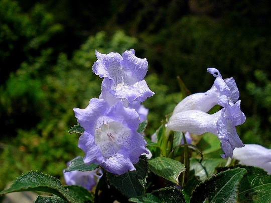

High in the misty hills of Ukhrul, Manipur, a pale, bell-shaped flower appears for only a brief season each year. It is called the Shirui Lily—Lilium mackliniae—and for generations, people have spoken of it as though it has only one address in the world.
That idea needs a little care.
The Shirui Lily is not quite as solitary as popular retellings suggest. Botanical studies have reported a few other small populations in nearby high-altitude landscapes, and conservation work has shown that the plant can be propagated under carefully controlled conditions. But its wild range remains remarkably narrow, fragile, and deeply tied to the hills of Manipur.
And among all the places associated with it, Shirui Kashong remains its true heart.
A flower of mist, height and short seasons
The Shirui Lily grows in the cool, cloud-wrapped upper reaches of the Shirui Hills in Ukhrul district. Here, the air is damp with mist, the slopes are open and windswept, and the seasons move slowly across the grasslands.
Locally, the flower is known as Kashong Timrawon, though English spellings vary from place to place. It blooms from around April to June, with its most celebrated flowering period usually falling between mid-May and early June.
The flower itself is modest rather than dramatic. Its petals curve gently downward in a soft bell shape, usually appearing pale pinkish-white or bluish-pink. Yet one of the most repeated observations about the lily is that, under magnification, its petals reveal seven colours.
It is the kind of flower that asks to be looked at twice.
From a distance, it seems delicate and quiet. Up close, it becomes more complicated.
Recorded by science, known long before
The Shirui Lily entered Western botanical records in 1946, when plant explorer Frank Kingdon-Ward encountered it in Manipur. It was later formally described as Lilium mackliniae, named in honour of Jean Macklin.
But it would be incomplete to say the flower was “discovered” then.
Long before it was given a Latin name or displayed to plant lovers abroad, the lily already belonged to the cultural memory of the Tangkhul Naga people. It was part of the hills, the seasons, the stories, and the identity of the communities who lived around it.
That distinction matters.
Science gave the flower a classification. The people of the hills had already given it meaning.
A flower wrapped in story
The Shirui Lily carries more than one legend, and the details change with the teller.
One story speaks of a princess connected to the hill, whose love and loss became part of the landscape itself. Another tells of a guardian presence watching over the mountain. In different retellings, the lily becomes a symbol of protection, kindness, prosperity and a good life.
These stories are not simply decorative folklore attached to a rare flower. They explain why the lily is treated with such affection and reverence in the region.
Every spring, when the flowers return, they bring with them more than colour. They bring memory.
Today, the Shirui Lily Festival celebrates the flower, the landscape and the culture surrounding it. But the celebration also carries a quieter responsibility: the more people come to see the lily, the more carefully the hills must be protected.
Rare, vulnerable and worth protecting
The Shirui Lily is listed as endangered in India’s Red Data Book of plants, and its survival is under pressure from several directions.
Climate change is altering the delicate conditions of its mountain habitat. Forest fires, habitat disturbance and expanding human activity have added stress. Invasive dwarf bamboo competes with the lily for space and resources. Tourism, while valuable for awareness and local livelihoods, can also bring trampling, littering, plucking and damage when it is not managed responsibly.
The challenge is not simply to keep one beautiful flower alive.
It is to protect an entire living landscape around it.
The Shirui National Park was established in 1982 to help preserve the lily’s habitat. Community groups, local volunteers, researchers and conservation organisations have also played an important role—collecting seeds, managing waste, removing invasive growth and studying ways to strengthen the species.
Scientists have successfully developed methods to propagate Shirui Lily plantlets in laboratories and establish them back in the hills. This is hopeful work. But it does not remove the need to protect the original habitat.
A flower can be grown in a laboratory.
A mountain ecosystem cannot.
Why it stays with me
What moves me most about the Shirui Lily is not the myth that it can never leave home.
It is something more powerful.
Its story reminds us that rarity is not always about mystery. Sometimes it is about dependence: a species depending on a particular climate, a particular landscape, a particular community of people who understand what is at stake.
The Shirui Lily is small, soft-coloured and easy to overlook from a distance. Yet an entire ecosystem, a set of stories, and a conservation struggle gather around it.
It blooms for only a few weeks each year.
But it leaves behind a much larger question:
When something rare belongs to a place, do we know how to protect the place well enough for it to remain there?
That is why the Shirui Lily stays with me.
And that is exactly the kind of wonder this journal exists to celebrate.

Vyora Studio Notebook
Inspired by this story
Shirui Lily Notebook
Inspired by the delicate beauty and remarkable story of the Shirui Lily, we created a Shirui Lily Notebook as part of the Vyora Studio Rare Flowers Collection. Designed for notes, reflections, sketches and everyday ideas, it is a small way to carry the wonder of this extraordinary flower with you.
View on Amazon →This notebook is an independent creative work by Vyora Studio. It is not affiliated with or endorsed by any conservation organisation or institution mentioned in this story.
SOURCES & IMAGE CREDIT
- The Government of Manipur’s Shirui Lily Festival page, the 2026 peer-reviewed conservation review, the 2018 scientific paper on lab-to-land propagation, and the Ukhrul district tourism page
- Wikipedia — Lilium mackliniae
- The Better India — Filled With Myth and Beauty, This Manipur Flower Is Wonder We Must Protect
- https://villagesquare.in/shirui-lilies-add-to-manipur-colouramid-concerns/
Read Next
Read Next

The 12-Year Wonder: Why the Neelakurinji Is the Crown Jewel of Rare Blooms
The flower that turns the Western Ghats blue once in a long cycle
Imagine standing on a windswept ridge in the Western Ghats where, year after year, the slopes remain a familiar green. Then, in a few brief weeks, the hillsides become a sea of violet-blue.
Read story →
The Hoh Rain Forest
Twelve Feet of Rain, One Square Inch of Silence
In the Hoh Rain Forest, rain is not just weather but a force that shapes trees, moss, rivers, and silence itself.
Read story →